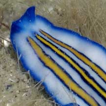
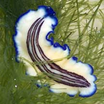

|
|
| flatworms text index | photo index |
| worms > Phylum Platyhelminthes > Class Turbellaria > Order Polycladida |
| Triple-striped
flatworm Pseudoceros rubrotentaculatus updated Sep 2019 Where seen? This small white flatworm with three blue lines in the centre of it body is sometimes seen on many of our shores, on coral rubble near living reefs. Features: 2-4cm long. Body white or bluish becoming dark blue at the margin. It has three lines in the centre of the body, each line yellow with a fine blue border. Included here are those with a distinct centre line, the two side lines rather faded. There is a pair of erect pseudotentacles at the front made up of folded edges of the body, although not always obvious. According to Rene Ong, this flatworm resembles Pseudoceros tristriatus which also has triple-stripes. But while Pseudoceros tristriatus has a blue body with three orange stripes, each bordered by black or dark purple, Pseudoceros rubrotentaculatus has a creamy-white body with three non-connecting ocher stripes bordered dark brown or purplish brown. So far, there has been no actual record of Pseudoceros tristriatus in Singapore. |
 Raffles Lighthouse, Aug 06 |
 |
|
 Sisters Island, Jan 06 |
*Species are difficult to positively identify without close examination.
On this website, they are grouped by external features for convenience of display.
| Triple-striped flatworms on Singapore shores |
| Photos of Triple-striped flatworms for free download from wildsingapore flickr |
| Distribution in Singapore on this wildsingapore flickr map |


| Acknowledgement With grateful thanks to Leslie H. Harris of the Natural History Museum of Los Angeles County for comments on this worm and its identification. References
|